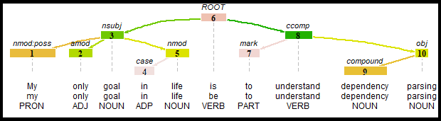

7 Part-of-speech tagging & dependency parsing
After working through Tutorial 7, you’ll be able to…
- Explain what part-of-speech tagging and dependency parsing are
- Assign part-of-speech tags and dependency relations to features
- Use part-of-speech tags and dependency relations to analyze how features (e.g., nouns) are described
1 Syntax-based text-as-data representations
In Tutorial 6, we learned about n-gram-based representations (e.g., keywords-in-context, collocations), which consider the order of features. Today, we go one step further and consider the syntax of texts, i.e., the grammatical role of features in a sentence:
- Part-of-speech tagging: Which word type (e.g., noun, verb, adjective) does a feature have?
- Dependency parsing: How do features relate to each other (e.g., which adjective describes which noun)?
For both, we use the package udpipe. Make sure that you install it first (you only need to do this once). Then, we load udpipe and the tidyverse:
2 Part-of-speech tagging
2.1 What is part-of-speech tagging?
Part-of-speech tagging is the
“process of assigning a part-of-speech to each word in a text” (Jurafsky & Martin, 2023, p. 163).
Most taggers use the tags of the Universal Dependencies project, which work across many languages. Here are some of the most common tags:
| Tag | Word type | Example |
|---|---|---|
| NOUN | noun | family, crime |
| PROPN | proper noun | Janet, Westeros |
| VERB | verb | fight, return |
| ADJ | adjective | young, mysterious |
| ADV | adverb | very, together |
| DET | determiner | the, a |
| AUX | auxiliary verb | will, is |
With part-of-speech tags, we can, for example…
- analyze which adjectives are used to describe a certain noun
- distinguish identical features with different meanings, e.g., “a sound solution” (adjective) vs. “What is that sound?” (noun)
- reduce texts to relevant features, e.g., only nouns, verbs, and adjectives
2.2 Part-of-speech tagging in R
We tag features with udpipe(). With the argument object, we specify the language of our texts. The first time you run the function, udpipe downloads a language model for English (about 16 MB), which is saved in your project folder.
Let’s tag a short example sentence:
token_id token lemma upos
1 1 Janet Janet PROPN
2 2 will will AUX
3 3 back back VERB
4 4 the the DET
5 5 bill bill NOUN
6 6 . . PUNCTThe output is a data frame with one row per token. The most important variables are:
-
token_id: the position of the token in its sentence -
token: the token itself -
lemma: its dictionary form (see lemmatization in Tutorial 3) -
upos: its part-of-speech tag
“Janet” is a proper noun, “will” an auxiliary verb, “back” a verb, “the” a determiner, and “bill” a noun - exactly as we would expect!
Yes! Taggers are statistical models trained on manually annotated texts. They work well, but not perfectly. For example, in “This is a sound solution”, “sound” is an adjective - but udpipe tags it as a noun:
token upos
1 This PRON
2 is AUX
3 a DET
4 sound NOUN
5 solution NOUN
6 . PUNCTAlways check your results qualitatively - and keep in mind that different packages and models can lead to different results.
2.3 Example: Tagging the TV series data
Now let’s tag our TV series descriptions. First, we read in the data:
data <- read.csv2("data/data_tvseries.csv", encoding = "UTF-8")Then, we tag all descriptions. This may take a moment (about 30 seconds), since udpipe analyzes about 20,000 tokens:
pos_tv <- udpipe(data$Description, object = "english")udpipe numbers our documents in the order of the data, i.e., doc1 is the first TV series description (“Game of Thrones”), doc2 the second one (“Breaking Bad”), etc.:
doc_id sentence_id token_id token lemma upos
1 doc1 1 1 Nine nine PROPN
2 doc1 1 2 noble noble ADJ
3 doc1 1 3 families family NOUN
4 doc1 1 4 fight fight VERB
5 doc1 1 5 for for ADPWhich word types are most frequent? We count the tags with count():
upos n
1 NOUN 6116
2 ADP 2956
3 DET 2822
4 PUNCT 2762
5 VERB 2513And which adjectives are most frequent? We keep only adjectives with filter() and count their lemmas:
lemma n
1 young 73
2 new 55
3 high 42
4 old 36
5 other 33TV series are often described as “young”, “new”, or “old”.
3 Dependency parsing
3.1 What is dependency parsing?
Part-of-speech tags tell us which word type a feature has - but not how features relate to each other. For this, we use dependency parsing, which describes
“the syntactic structure of a sentence […] in terms of directed binary grammatical relations between the words” (Jurafsky & Martin, 2023, p. 381).
Every sentence has a root (usually its main verb). All other features depend on another feature, their head. The type of relation is called dependency relation. Here is our example sentence:

For example, “parsing” is the root. “goal” depends on “parsing” as its subject (nsubj), and “only” depends on “goal” as an adjectival modifier (amod).
You may be surprised that “is” is not the root. In sentences with “to be” (e.g., “X is Y”), the root is the predicate - here “parsing” - while “is” only links subject and predicate as a copula (cop).
3.2 Dependency parsing in R
udpipe() does not only assign part-of-speech tags - it also parses dependencies. Two further variables are important:
-
head_token_id: thetoken_idof the head a token depends on (0 = root) -
dep_rel: the type of dependency relation
token_id token upos head_token_id dep_rel
1 1 My PRON 3 nmod:poss
2 2 only ADJ 3 amod
3 3 goal NOUN 8 nsubj
4 4 in ADP 5 case
5 5 life NOUN 3 nmod
6 6 is AUX 8 cop
7 7 dependency NOUN 8 compound
8 8 parsing NOUN 0 root
9 9 . PUNCT 8 punctFor example, “only” (token_id 2) has the head 3, i.e., it depends on “goal” as an adjectival modifier (amod). You can find an overview of all dependency relations here.
3.3 Example: How are families described?
With dependency relations, we can analyze which adjectives directly describe a noun. Such adjectives have the dependency relation amod (adjectival modifier).
Which adjectives describe families in our TV series data?
Let’s find out. We proceed in two steps.
First, we find all nouns with the lemma “family”. We keep their position (document, sentence, token ID) and rename token_id to head_token_id - because we are looking for adjectives that have these families as their head:
Second, we keep all adjectival modifiers (amod) and use inner_join() to keep only those whose head is one of our families:
pos_tv |>
filter(dep_rel == "amod") |>
inner_join(families, by = c("doc_id", "sentence_id", "head_token_id")) |>
count(lemma, sort = TRUE) |>
head(5) lemma n
1 dysfunctional 6
2 american 2
3 entire 2
4 human 2
5 ordinary 2Families are often described as “dysfunctional”!
💡 Take-Aways
🤓 Smart Hacks
udpipe offers models for many languages. For German texts, for example, use object = "german":
udpipe("Die Serie handelt von einer jungen Familie.", object = "german")🎲 Quiz
📚 More tutorials on this
You still have questions? The following tutorials & papers can help you with that:
- udpipe documentation
- Universal Dependencies: part-of-speech tags and dependency relations
- Jurafsky, D., & Martin, J. H. (2023). Speech and language processing (3rd ed. draft), Chapters on part-of-speech tagging and dependency parsing. https://web.stanford.edu/~jurafsky/slp3/
📌 Test your knowledge
Task 1 (Easy🔥)
Use the tagged TV series data. What are the five most frequent verbs in the TV series descriptions?
Task 2 (Medium🔥🔥)
Use the tagged TV series data. Which adjectives occur in descriptions that mention “woman”?
Hint: First, save the doc_id of all descriptions that mention “woman” with pull(). Then, keep only these documents with %in%.
Task 3 (Hard🔥🔥🔥)
Use the tagged TV series data. Which adjectives directly describe “man” vs. “woman”?
Hint: Use dependency relations as in Section 3.3.